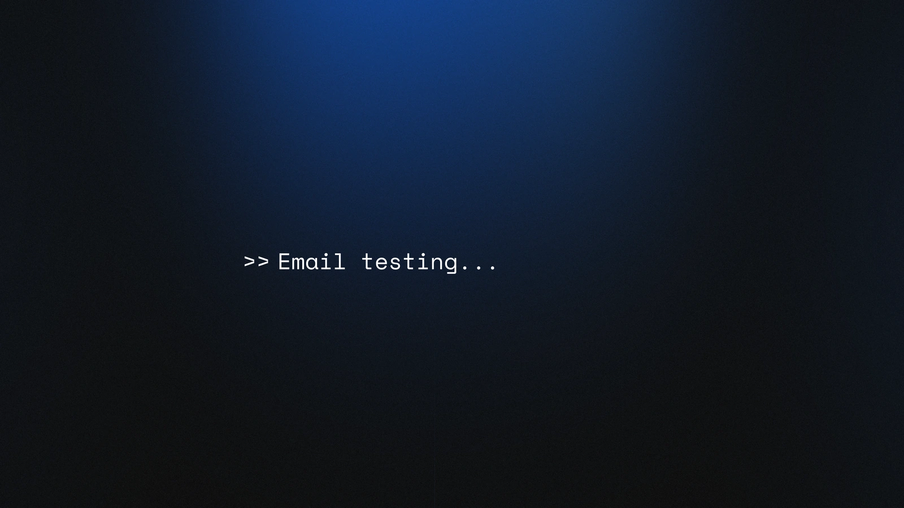
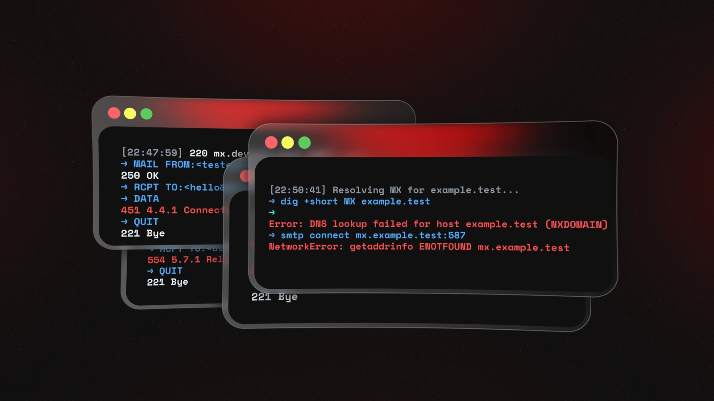
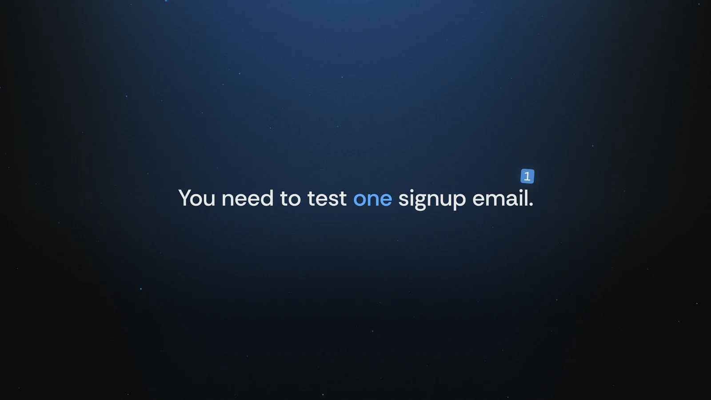
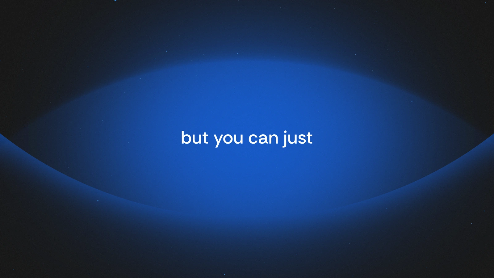
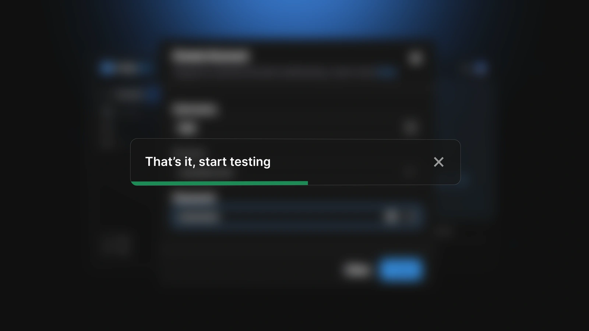

A 53-second film that explains smtp.dev, an email testing tool for developers. Concept, design and animation by me.
Every beat has a job.
Seven beats in 53 seconds, each with the reason it’s there.

-
010:00
Start where they work.
The film opens on a prompt,
Mono · the developer’s voice>> Email testing, set in mono. Developers spend their day in lines like that, so there’s nothing to sell yet and nothing to explain. -
020:02
Let the errors talk.
Terminal windows stack up with real SMTP errors, then a DNS lookup that fails. Anyone who has tested email has seen them. The red light arrives with them, and red stays reserved for friction from here on.
Red · friction only -
030:03
One human line.
A code comment answers back:
Comment syntax · a human aside// Yeah, it’s a pain.Then the stakes, in plain words: you need to test one signup email, and the setup clock keeps counting up until it turns red. -
040:09
Make the turn visible.
The frame opens, red gives way to blue, and the smtp.dev mark lands in the middle of the sentence: but you ✓ can just. Then the mark opens into the app itself.
Blue · the product arrives -
050:12
Let the interface explain.
I rebuilt smtp.dev’s UI in Illustrator, piece by piece, and animated it in After Effects: add a domain, update MX records, create an account, then That’s it. Start testing. No captions on top. A title like Update MX records arrives on its own, then becomes the dialog it names.
Four steps · told by the UI -
060:29
Short claims, fast lines.
Works with any client. Unlimited domains. Unlimited accounts. Not SendGrid. Not SES. Just testing. One claim per cut, carried by speed lines, with one more visit to the terminal to say plainly what’s open and what’s blocked.
Speed lines · one claim per cut -
070:43
End on the mark.
The line Simple. Clear. No surprises. fades out and the check comes back as the logo. The wordmark types itself in, the way the film began, and the tagline follows: Email testing that just works.
The check closes the loop
Designed still, before it moved.
Six frames set the direction.

The opening prompt, close to how it plays.

Stacked SMTP errors. The red light came with them.

The stakes, in plain words: one signup email.

The turn: the frame opens into blue.

The last step in a toast. It became a frame of its own.
The end card: mark, wordmark, one line.
One language, three lengths.
The main film, a shorter cut that gets to the product faster, and a logo loop. Same type, same light, same check.
A faster way in.
The pain gets five seconds: Email testing should be simple. Now it is. Then it’s straight into setup, through the same four steps and the same ending.
The mark, on repeat.
The check folds into a bar, opens into an inbox, and folds back. The mark the film ends on, built to repeat.
Handed over, ready to post.
Masters in 4K, versions for each platform, and the After Effects project, ready for the next format.
>> delivered/ ├─ main-film 0:53 · 3840 × 2160 · 60 fps ├─ short-cut 0:35 · 3840 × 2160 · 60 fps ├─ logo-animation 16:9 · 1:1 · with and without text │ └─ loop 16:9 · 1:1 ├─ platforms Master · LinkedIn · X · YouTube ├─ posters 6 stills · 4K └─ source After Effects project // handed over, end of 2025
- Concept, design & animation
- Turinoz
- Product UI
- smtp.dev
- Logo & brand assets
- Jord Riekwel, Larkef
- Music & sound
- External collaborator
- Tools
- Illustrator, After Effects
- Also on Dribbble
- Selected moments Logo animation